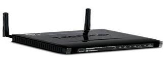

Los equipos de conexión son componentes esenciales en las redes de computadoras, ya que facilitan la interacción entre diversas máquinas, redes o partes de una red. Cada uno de estos equipos tiene un papel particular en el esquema de red y funciona en diferentes niveles del modelo OSI (Interconexión de Sistemas Abiertos).
| Repetidor: El repetidor es un aparato esencial en redes, cuya función principal es revitalizar las señales de información debilitadas por la distancia o interferencia. Captura señales débiles y las retransmite con su fuerza original, sin procesar datos ni tomar decisiones. Su importancia se destaca en redes amplias donde se necesitan mantener la calidad de las señales. | |
|
HUB: El hub o concentrador es un dispositivo básico que retransmite información a todos los dispositivos conectados sin distinguir su destino, lo que provoca tráfico innecesario y colisiones. Aunque es menos eficiente que opciones modernas, su simplicidad y bajo costo lo hicieron popular en las primeras redes locales. |
| Puente: El bridge mejora el rendimiento en redes al segmentarlas, identificando direcciones físicas y decidiendo el reenvío de paquetes. Funciona como un filtro que minimiza el tráfico innecesario, siendo especialmente útil en redes medianas que requieren eficiencia sin complicar la infraestructura. | |
| Switch: El switch es un dispositivo clave en redes locales, identificando direcciones MAC y reenviando paquetes al puerto específico del destinatario, lo que permite múltiples conversaciones simultáneas. Aumenta el rendimiento al reducir la congestión y aprende las direcciones MAC conectadas, convirtiéndose en una herramienta inteligente y eficiente en diversas configuraciones de red. | |
| Router: El switch es un dispositivo clave en redes locales, identificando direcciones MAC y reenviando paquetes al puerto específico del destinatario, lo que permite múltiples conversaciones simultáneas. Aumenta el rendimiento al reducir la congestión y aprende las direcciones MAC conectadas, convirtiéndose en una herramienta inteligente y eficiente en diversas configuraciones de red. | |
| Puerta de enlace o Gateway: La puerta de enlace o gateway es un dispositivo o software que se encarga de traducir protocolos entre redes que utilizan lenguajes o arquitecturas diferentes. Esto es muy útil en entornos empresariales donde conviven diferentes tipos de redes, como redes que utilizan TCP/IP y otras que emplean protocolos más antiguos o especializados. |  | Modem: El módem, que significa modulador-demodulador, permite la conexión entre una red digital y una red analógica, como por ejemplo la red telefónica. Este dispositivo fue muy utilizado en conexiones a Internet mediante líneas telefónicas, aunque todavía se emplea en muchas infraestructuras modernas, como los módems de fibra o cable coaxial que permiten el acceso a Internet de banda ancha. | Punto de acceso: l punto de acceso inalámbrico o access point es el dispositivo que permite que equipos con capacidades Wi-Fi se conecten a una red cableada. Aunque a veces se confunde con el router, su función principal es la de actuar como un puente entre el mundo inalámbrico y el mundo físico de los cables. Es muy útil para ampliar la cobertura de una red, especialmente en espacios grandes o donde la señal del router principal no llega adecuadamente. | Regresar a la pagina anterior